Fast Robots: Lab 6

Arduino IDE • Bluetooth • Jupyter Notebooks • PID
Angular PID
This lab is about implementing a PID controller for the angle of the robot using the DMP (digital motion processor) on the IMU.
Arduino IDE • Bluetooth • Jupyter Notebooks • PID
This lab is about implementing a PID controller for the angle of the robot using the DMP (digital motion processor) on the IMU.
Similar to the linear PID, to start the PID control scheme, we have to signal it from our Jupyter Notebook. This is done through a bluetooth command that intializes the PID state variables and inputs Kp, Ki, Kd, a timeout for how long we want the PID loop to run for, a minimum PWM signal to accomodate for different floor conditions, a minimum output PWM to be considered moving to prevent the robot from oscillating in place, and a flag to indicate whether to reset the data collection variables. The code to start is shown below:
case PID_ROTATE_START:
{
//"SETPOINT|Kp|Ki|Kd|TIMEOUT|MIN_PWM|THRESHOLD|OUTPUT THRESHOLD (if output < out_thresh output = 0)|change mid run (1 for if its running a pid loop and you want to keep the previous data collected but change the setpoint 0 if you want to clear the data)
pid_rotate_start = 1;
rotate_integral = 0;
previous_angle_error = 0;
prev_angle = yaw;
success = robot_cmd.get_next_value(setpoint);
if (!success)
return;
success = robot_cmd.get_next_value(Kp);
if (!success)
return;
success = robot_cmd.get_next_value(Ki);
if (!success)
return;
success = robot_cmd.get_next_value(Kd);
if (!success)
return;
success = robot_cmd.get_next_value(timeout);
if (!success)
return;
success = robot_cmd.get_next_value(min_pwm);
if (!success)
return;
success = robot_cmd.get_next_value(threshold);
if (!success)
return;
success = robot_cmd.get_next_value(output_threshold);
if (!success)
return;
int change_midrun;
success = robot_cmd.get_next_value(change_midrun);
if (!success)
return;
pid_rotate_start_time = micros();
prev_pid_rotate_time = micros();
if (change_midrun != 1) {
bufferIndex = 0;
bufferFull = false;
}
first_run_rotate = true;
prev_derivative = 0;
break;
}
The pid_rotate_start flag is used to call our pid movement function in the main loop.
void loop()
{
// Listen for connections
BLEDevice central = BLE.central();
// If a central is connected to the peripheral
if (central)
{
Serial.print("Connected to: ");
Serial.println(central.address());
// While central is connected
while (central.connected())
{
// Send data
write_data();
get_DMP_data();
if (pid_forwards_start)
{
moveForwardsPID();
// stop if timed out
if (micros() - pid_forwards_start_time > timeout)
{
stoppingForwardsPID();
}
}
if (pid_rotate_start)
{
rotatePID();
if (micros() - pid_rotate_start_time > timeout)
{
stoppingRotatePID();
}
}
// Read data
read_data();
}
Serial.println("Disconnected");
stopMotors(); // stop motors when disconnected
}
}
After the PID loop finishes, we send over the accumulated data over bluetooth:
void stoppingRotatePID()
{
stopMotors();
pid_rotate_start = false;
// send PID data over BLE for debugging
int startPos = bufferFull ? bufferIndex : 0;
int totalPoints = bufferFull ? MAX_CAPACITY : bufferIndex;
Serial.printf("PID loop ended. Sending %d data points over BLE...\n", totalPoints);
for (int i = 0; i < totalPoints; i++)
{
// Calculate current circular index
int currentIndex = (startPos + i) % MAX_CAPACITY;
tx_estring_value.clear();
tx_estring_value.append("T:");
tx_estring_value.append(timeStampArray[currentIndex]);
tx_estring_value.append("Y:");
tx_estring_value.append(yawBuffer[currentIndex]);
tx_estring_value.append("E:");
tx_estring_value.append(pidErrorArray[currentIndex]);
tx_estring_value.append("I:");
tx_estring_value.append(pidIntegralArray[currentIndex]);
tx_estring_value.append("D:");
tx_estring_value.append(pidDerivativeArray[currentIndex]);
tx_estring_value.append("DT:");
tx_estring_value.append(dtArray[currentIndex]);
tx_estring_value.append("O:");
tx_estring_value.append(pidOutputArray[currentIndex]);
tx_characteristic_string.writeValue(tx_estring_value.c_str());
// Small delay to prevent overwhelming the BLE stack
delay(5);
}
}We then process this data in Python via a notification handler and save it to a CSV. The PID code itself is shown below:
void rotatePID()
{
int error = 0;
if (micros() - pid_rotate_start_time < timeout)
{
// we want error to be positive when we are to the right of setpoint and negative when we are too left
float error = setpoint - yaw;
while (error < = -180.0f) error += 360.0f;
while (error > 180.0f) error -= 360.0f;
if (first_run_rotate)
{
// on the first run we want to set previous error to the current error so that the derivative term doesn't spike
previous_angle_error = error;
prev_derivative = 0;
prev_pid_rotate_time = micros();
first_run_rotate = false;
}
float dt = (micros() - prev_pid_rotate_time) / 1000000.0;
rotate_integral += error * (dt);
int max_integral = 400; // max integral term to prevent windup, this is a tunable parameter
if (rotate_integral > max_integral)
{
rotate_integral = max_integral;
}
else if (rotate_integral < -max_integral)
{
rotate_integral = -max_integral;
}
float alpha = 0.9;
float dt2 = max(dt, 0.01); // prevent division by zero and very large derivative on the first run, but allow for more responsive derivative term than 0.01
float derivative = alpha * (error - previous_angle_error) / (dt2) + (1 - alpha) * prev_derivative;
prev_derivative = derivative;
prev_pid_rotate_time = micros();
float output = Kp * error + Ki * rotate_integral + Kd * derivative;
// Apply output to motor speeds (example values)
int max_output = 255; // maximum PWM value
if (output > max_output)
{
output = max_output;
}
else if (output < -max_output)
{
output = -max_output;
}
if (abs(output) < min_pwm && output != 0)
{
if (abs(output) < output_threshold)
{
// if output is small set it to 0 to prevent jitter
output = 0;
}
else {
// If the output is too small, we might not overcome static friction, so set a minimum output
output = (output > 0) ? min_pwm : -min_pwm;
}
}
if (bufferIndex < MAX_CAPACITY)
{
timeStampArray[bufferIndex] = micros();
yawBuffer[bufferIndex] = yaw;
pidErrorArray[bufferIndex] = error;
pidOutputArray[bufferIndex] = output;
pidIntegralArray[bufferIndex] = rotate_integral;
// pidDerivativeArray[bufferIndex] = derivative;
pidDerivativeArray[bufferIndex] = derivative;
dtArray[bufferIndex] = dt;
bufferIndex++;
}
else
{
bufferFull = true;
}
// Serial.printf("Distance: %d mm, Error: %d, Output: %d\n", distance, error, output);
if (abs(error) < threshold)
{
// If we are within 4 cm of the setpoint, stop the motors
breakMotors();
output = 0;
}
else
{
output = (int)output; // cast output to int for motor control
if (output != 0)
{
if (output > 0)
{
turnRight(output);
}
else if (output < 0)
{
turnLeft(-output);
}
}
else
{
// If output is 0, we can stop the motors
stopMotors();
}
}
previous_angle_error = error;
}
return;
}The DMP (digital motion processor) on the IMU offloads the sensor fusion calculations of the gyroscope, accelerometer, and magnetometer from the main processor, giving us more accurate and stable yaw measurements at a faster rate than we could get by doing the sensor fusion ourselves. This allows our PID loop to run faster and with more accurate measurements, improving the performance of our controller. The problem is that the DMP is always running and filling up its internal FIFO buffer with measurements, so we have to make sure to read from it fast enough to get the current measurement and prevent it from crashing from overflow. We set up the DMP to output a game rotation vector, which gives us the quaternion orientation of the robot with its orientation relative to its startup position. We then convert this quaternion to yaw, which is the angle we want to control with our PID loop. Below is the code to read from the DMP and convert the quaternion to yaw which runs every loop to always read from the FIFO:
void get_DMP_data()
{
icm_20948_DMP_data_t data;
myICM.readDMPdataFromFIFO(&data);
// Is valid data available?
if ((myICM.status == ICM_20948_Stat_Ok) || (myICM.status == ICM_20948_Stat_FIFOMoreDataAvail)) {
// We have asked for GRV data so we should receive Quat6
if ((data.header & DMP_header_bitmap_Quat6) > 0) {
double q1 = ((double)data.Quat6.Data.Q1) / 1073741824.0; // Convert to double. Divide by 2^30
double q2 = ((double)data.Quat6.Data.Q2) / 1073741824.0; // Convert to double. Divide by 2^30
double q3 = ((double)data.Quat6.Data.Q3) / 1073741824.0; // Convert to double. Divide by 2^30
double q0 = sqrt(1.0 - ((q1 * q1) + (q2 * q2) + (q3 * q3)));
double qw = q0; // See issue #145 - thank you @Gord1
double qx = q2;
double qy = q1;
double qz = -q3;
// yaw (z-axis rotation)
double t3 = +2.0 * (qw * qz + qx * qy);
double t4 = +1.0 - 2.0 * (qy * qy + qz * qz);
prev_angle = yaw;
yaw = atan2(t3, t4) * 180.0 / PI;
// append to imu time buffer
if (is_collecting) {
IMUtimeBuffer[imubufferIndex] = micros();
imubufferIndex++;
if (imubufferIndex >= MAX_CAPACITY) {
imubufferIndex = 0;
imubufferFull = true;
}
}
}
}
}We also setup the DMP to output values at ~18.3Hz since the DMP would crash from overflow if we tried to read it faster. Through testing, we found that the actual output of the DMP is around 20Hz. However, we also sampled the PID loop which runs at about 666Hz. This means that the PID loop should be able to run with the DMP running at its max speed of 55Hz, but that crashes the IMU for some reason so we settled for 20Hz.
We also wanted to see how much the measurements drift overtime when the robot is stationary. On startup, the DMP calibrates itself to about 3.46 degrees, probably due to the magnetometer, and has a standard deviation of about 0.022 degrees. Below is a plot of the yaw measurements:
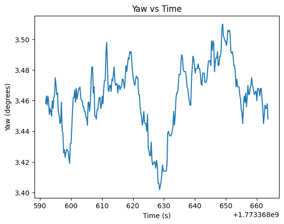
Also, according to the datasheet, the maximum degree/sec that the gyroscope can measure is 2000 degrees/sec, which means that the fastest that the robot could spin without saturating the gyro is about 11.1 rotations per second, which is pretty fast and is never reached in our tests, so we don't have to worry about that.
For the first trial Kp value, we wanted a value that would be pretty slow, so we mapped an error of 180 degrees to a PWM output of 200, which gave us a Kp value of about 1.11. This value gave us a pretty slow response with no overshoot, and also since the minimum PWM to spin is about 130, if we get to an angle that is less than about 117 degrees away from the setpoint, we will stop moving since the output will be less than 130, and we won't move. Because of this, I set the PWM vlaue to output a minimum of 130 degrees when the output is above 1.4 to prevent this from happening. If I set the output threshold lower then the robot would jitter as it got to its setpoint. A kp=1.11 was super slow though, so I increased it to 2.5 after testing. Below is are videos of it running with kp=2.5 without an output threshold and one with and a plots of the results. The robot does overshoot but is able to get to the setpoint and have a steady state error of about 0.015 degrees in the oscillation case after settling, and the threshold case has an error of about 0.042 degrees. However, we have to remember that the precision of our measurements is only about 0.022 degrees, so the robot is basically oscillating around the limit of our measurement precision, which is pretty good with just a proportional term.
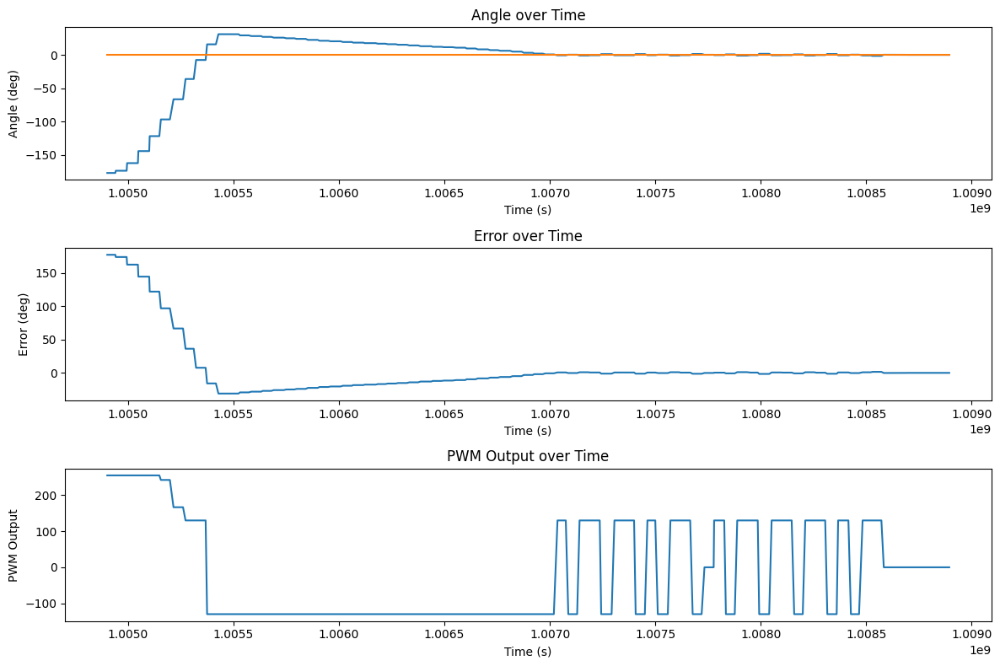
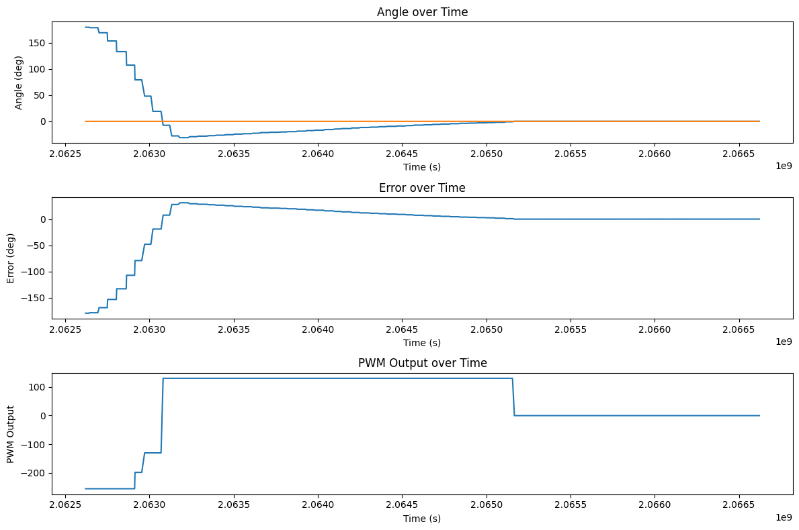
We also wanted to see how our robot would respond to disturbances and changes in setpoint. We found that with just a proportional term, the robot was able to recover well and get to a different setpoint also pretty well with a steady error of 0.06 degrees for the first point and 0.1 degrees for the second. To set a different setpoint while its running, we just start up the PID loop again using the same code as above just without overwriting the existing data. For changing the setpoint, after a kick the robot gets close to -180 degrees which is why it looks so far from the setpoint on the graph, but it's equivalent.
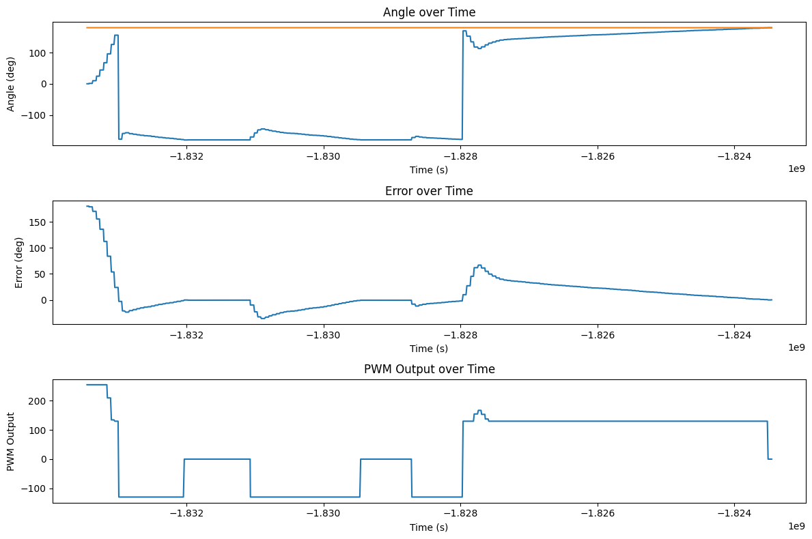
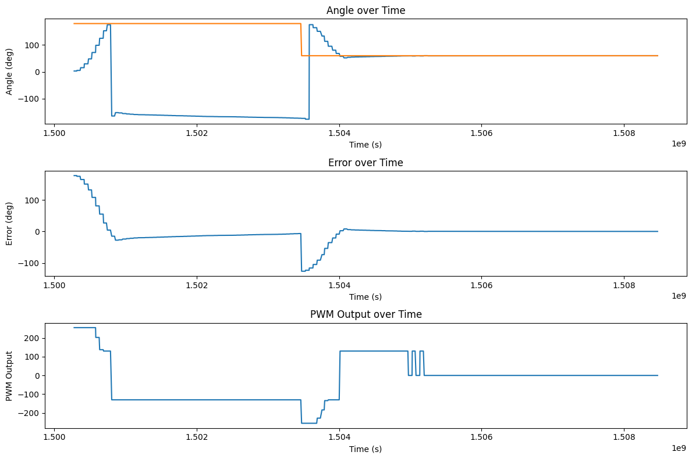
We want to make the robot able to turn on different surfaces. Below are tests of just using Kp=2.5, Ki=0 on a slippy couch and a carpet. In the error plots below, the orange line is the integral of the previous error. The robot is able to turn well on the slippy couch, but struggles on the carpet since the minimum PWM isn't high enough to turn. This illustrates why the integral term is necessary since different surfaces will require a different minimum PWM to turn, and the integral term can help accumulate error and output a stronger signal to get the robot to turn on surfaces with higher friction.
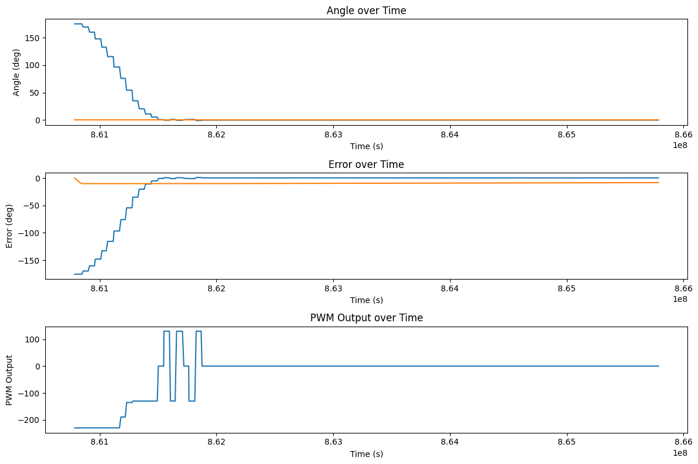
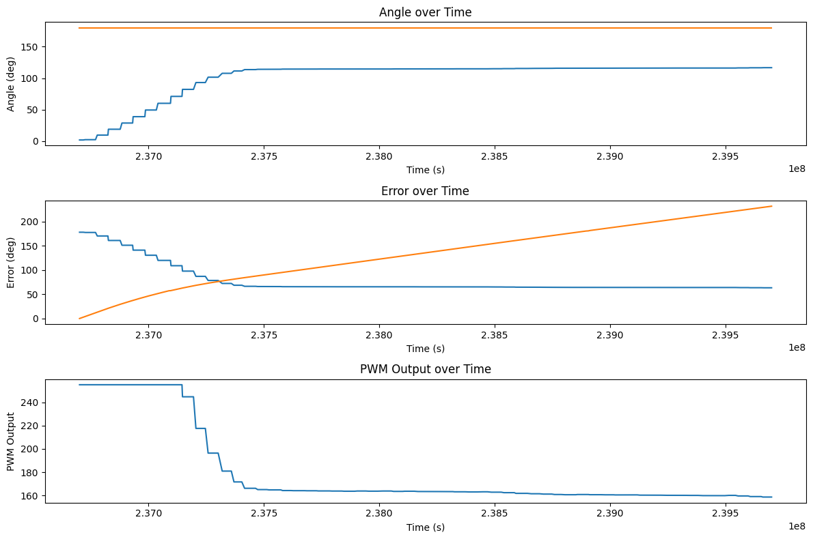
To fix this problem, we can add an integral term to accumulate error over time and output a stronger signal to get the robot to turn. In the video on the carpet above, the integral of the error is about 100 when the robot is struggling to turn with a PWM of 160. On the carpet the minimum PWM is about 170 so we can start with an integral term of 0.1 to help it. The plot of this trial is shown below:
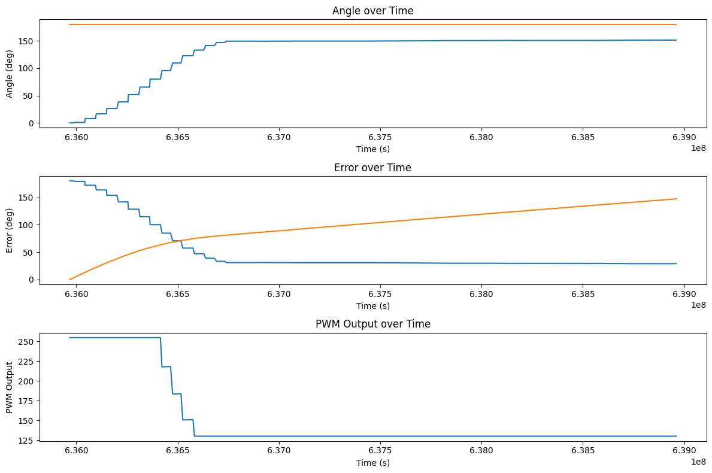
In theory, the integral term will continue to accumulate error until the robot reaches the setpoint, but in this case, it was really slow so we upped the ki value to 0.25 and it was able to get to the setpoint in a reasonable amount of time. The video and plot of this trial is shown below. The robot started to move back and forth a bit as it moved though, which could be due to the wheels being unbalanced in the way they grip the floor on this carpet since it turns on its axis on the floor.
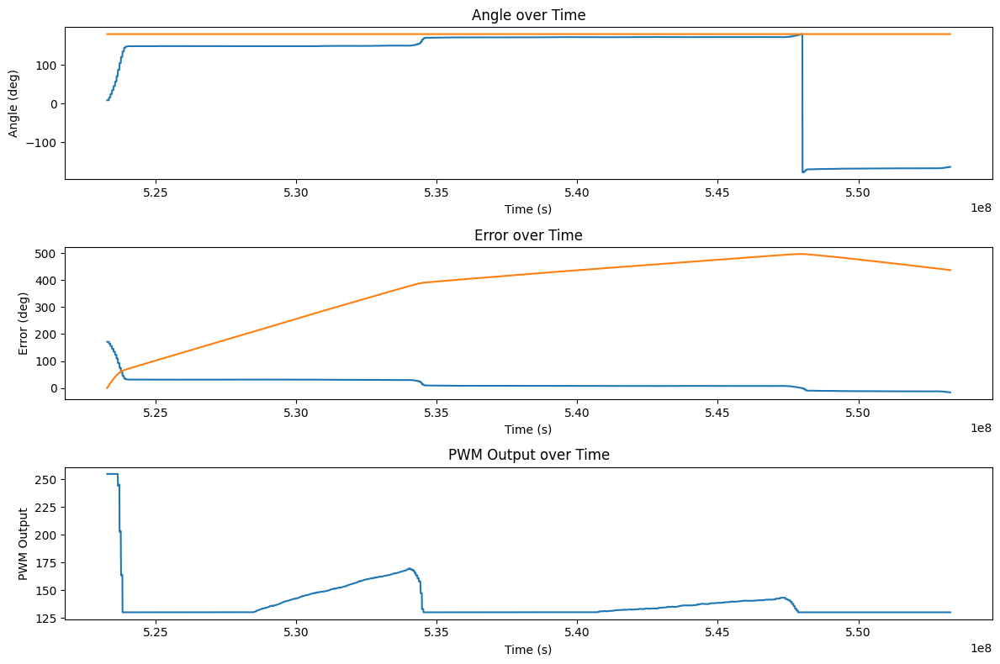
If we stop the robot from moving, then it can accumulate error in its integral term. This sets the output to the max value for a while until it has time to settle down. A video demonstrating this is shown below:
Capping the max integral term to 400 prevents this from happening since the error can never get too large to make it spin uncontrollably forever. This may be too low for the future implementation of the PID controller since we later lower Ki to 0.1, so the integral term will only contribute 40 to the output at most, which may not be enough to get the robot to turn on surfaces with higher friction, but it works for our current implementation and is a tunable parameter that can be increased if we find that we need more integral output in the future. Here the robot accumulates error but then can settle to a reasonable stopping point instead of spinning uncontrollably. The video and plot of the trial with the max integral term (and ki=0.25) is shown below:
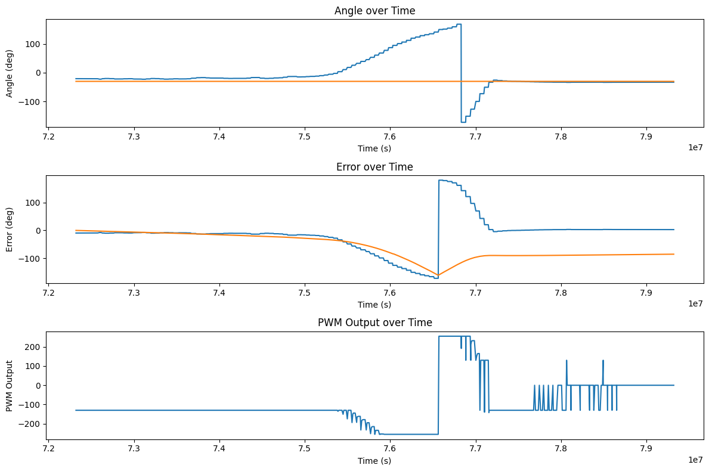
Adding an integral term helps the robot turn on different surfaces, but it also causes the accumulated error to push against the proportional term if we overshoot, causing the robot to take forever to settle to the setpoint. This problem can be prevented by adding a derivative term to decrease the overshoot. Below is a plot of the robot turning without a derivative term. The system overshoots and the integral term fights back against the proportional term for a long time, causing it to take a long time to settle to the setpoint. In this trial, the final error is about 13.4 degrees.
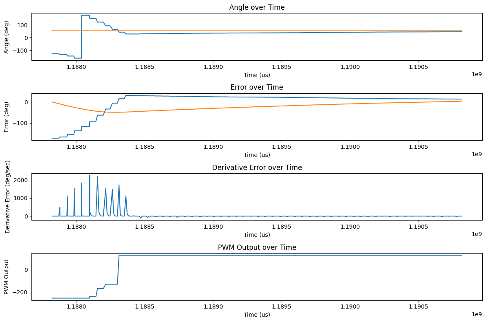
For our derivative term, we take the derivative of the integral of the angle changes output by the gyroscope. This calculation could most likely be simplified by getting the change in angle directly from the IMU, but manually calculating it works too. Because we initialize the previous error to the current error on the first run, we don't get a huge spike in the derivative term on the first run or when we change the setpoint, and the error calculation is smooth and handles going back and forth between 180 and -179 (in the PID code at the top of the site) so we don't have much derivative kick. However, if we did have a derivative kick for some reason, like physically kicking the robot or a fast loop time with a noisy derivative term, we could give a minimum dt for our calculation and add a low pass filter to the derivative term to smooth it out and prevent the kick from causing a huge spike in the output. This is done by taking a weighted average of the current derivative and the previous derivative, which is also shown in the code above with the alpha value of 0.9 which seemed to work the best. After tuning for a while, I found that a Kp value of 2.5, Ki value of 0.1, and Kd value of 0.09 gave me a pretty good response with a much smaller overshoot and a final error of about 0.487 degrees. The plot of this trial is shown below:
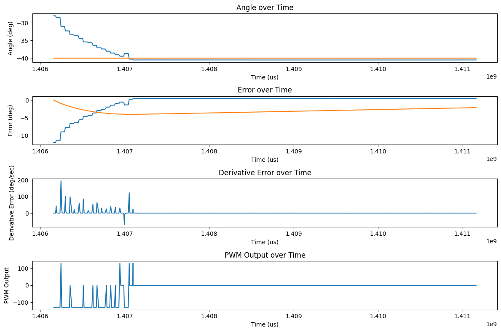
However, on the floor of Tang Hall, with just the proportional term, the robot was able to settle to a point about 0.042 degrees away from the setpoint. This signals that if we want max precision and we know the surface of the floor (and that it is on the floor of Tang Hall), we can get the best performance by just using Kp=2.5, Ki=Kd=0.
Also looking ahead for future labs, we may want to drive forwards and turn at the same time. Changing the PID code should be simple for this to just change our turning from commanding an absolute output to adding an output to each motor to preserve any forwards command.
I collaborrated with Ananya Jajodia on this lab. I also used Aidan Derocher's website as a reference for the plots and derivative calculation.
Copyrights © 2019. Designed & Developed by Themefisher